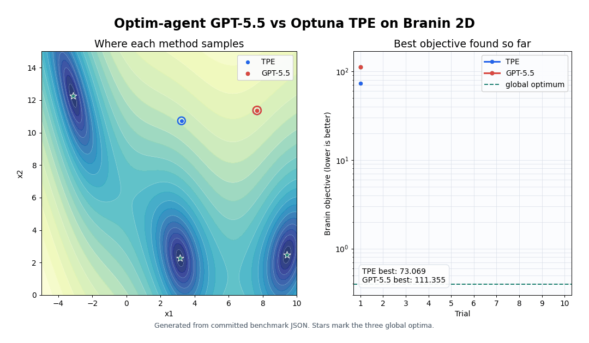
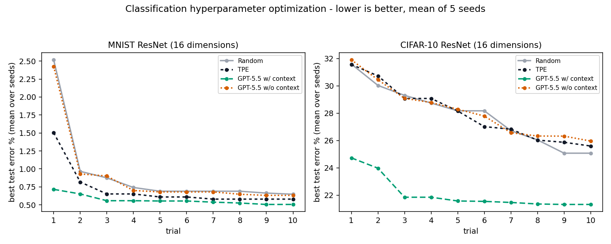
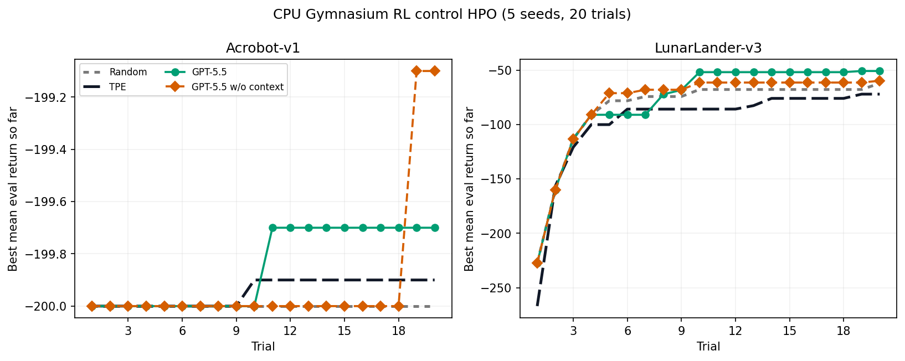
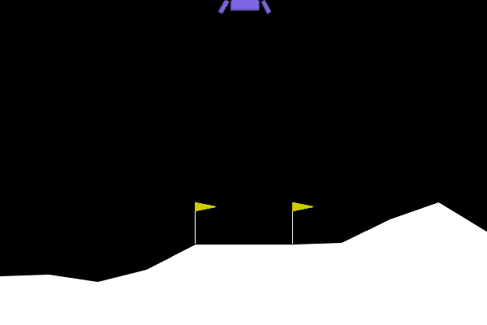
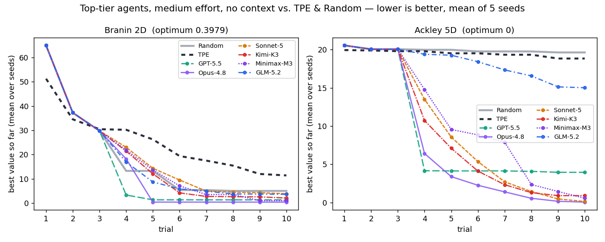
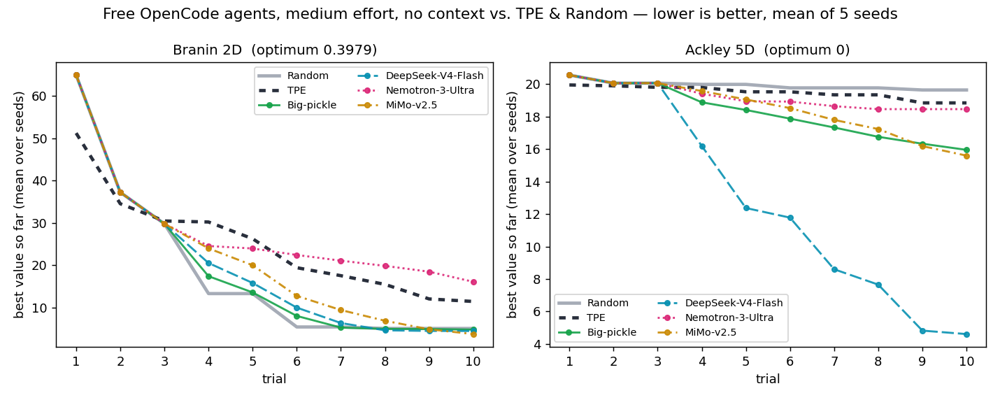
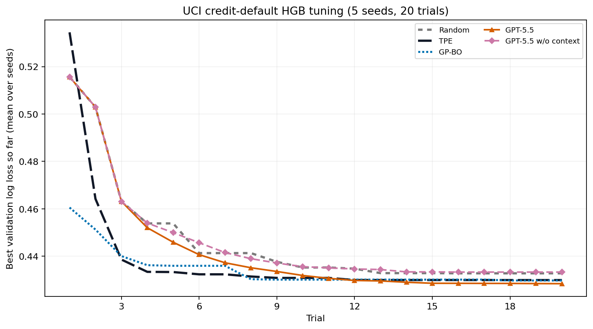

optim-agent
Agentic system optimization with coding agents.
optim-agent automates the iterative parameter-tuning work of an algorithm engineer. Give it a system with configurable parameters and a measurable objective; Claude Code, Codex, or OpenCode combines parameter semantics with trial history to choose the next configuration. Your objective remains the authority, and invalid proposals fall back to safe sampling.
Installation
pip install optim-agentThe package has zero runtime dependencies (pure standard
library). You also need at least one agent CLI on your PATH,
already authenticated:
| Backend | CLI | Install docs |
|---|---|---|
claude | Claude Code | docs.anthropic.com |
codex | Codex CLI | github.com/openai/codex |
opencode | OpenCode | github.com/sst/opencode |
Requires Python ≥ 3.9. The examples additionally need
pip install "optim-agent[examples]" (numpy + matplotlib).
Quickstart
import optim_agent as oa
def objective(trial):
threshold = trial.suggest_float(
"threshold", 0.05, 0.95,
context="decision threshold; higher values trade recall for precision",
)
budget = trial.suggest_int(
"budget", 10, 200, log=True,
context="compute or operating budget; larger values may improve quality",
)
return evaluate_system(threshold=threshold, budget=budget)
study = oa.create_study(
direction="maximize",
sampler=oa.AgentSampler(
backend="claude", # or "codex" / "opencode"
effort="high",
context="maximize system quality under a strict operating-cost budget",
history=5,
explicit_reasoning=True,
qualitative_notes=True,
),
storage="study.json",
)
study.optimize(objective, n_trials=20)
print(study.best_value, study.best_params)That is the whole workflow. The objective is called once per trial; inside
it you declare parameters with suggest_* calls
(define-by-run — the search space is discovered as trials execute), and the
sampler decides what values those calls return.
Tutorials
Start offline, then move to the domain closest to your workload. Each example keeps its objective and trade-offs visible.
| Path | What it demonstrates | Requirements |
|---|---|---|
| General quickstart | A complete black-box study with the token-free mock backend. | stdlib only |
| Classical ML | Random-forest accuracy on a built-in sklearn dataset. | .[ml] |
| AI inference | An explicit quality floor with p95 latency and request cost. | stdlib only |
The quickstart notebook is Colab-ready. It uses the mock backend because hosted runtimes do not carry your local agent CLI authentication.
Optimization trajectory

This seed-0 trace uses the same 10-trial budget for both methods. It is an
illustration of the search path; the multi-seed
benchmarks carry the comparative claim. Regenerate it with
python scripts/render_trajectory.py.
How it works
Each trial runs this loop:
- The study asks the sampler for a proposal. For the first
n_inittrials (default 2) the proposal is random — the agent needs some history to reason about. - For later trials,
AgentSamplerbuilds a harness prompt: the optimization direction, your context string, the search-space bounds, a table of past trials (parameters, value, state — including pruned and failed ones), the best result so far, and — at higher effort — the agent's own notes from previous calls. - The prompt is sent to the agent CLI as a one-shot subprocess call. The agent replies with a JSON object of parameter values.
- The reply is parsed and validated against the search space: numeric values are clamped into range, categorical values must match a declared choice, NaN/infinity are rejected. Invalid replies get one retry, then the trial falls back to a random point (with a warning) — a flaky agent can never crash a study.
- Your objective runs;
tellrecords the value; ifstorageis set the study JSON is atomically rewritten.
Search space
| Call | Distribution |
|---|---|
trial.suggest_float(name, low, high, log=False) |
Float in [low, high]; log=True samples on a log scale (requires low > 0). |
trial.suggest_int(name, low, high, log=False) |
Integer in [low, high], log scale optional. |
trial.suggest_categorical(name, choices) |
One of the given choices. |
Rules the study enforces loudly (a ValueError, not silent
misbehavior):
- Re-declaring a parameter with different bounds or type mid-study raises — a changed distribution would invalidate the history the agent reasons over. Start a new study (or a new storage file) instead.
log=Truewithlow ≤ 0raises at declaration.- Values coming back from an agent are clamped/canonicalized; garbage falls back to random sampling.
Samplers
AgentSampler
oa.AgentSampler(
backend="claude", # "claude" | "codex" | "opencode" | "mock"
model=None, # passed to the CLI's model flag; None = CLI default
effort="high", # forwarded to the backend CLI's reasoning-effort flag
context=None, # free-text: what is being tuned
history=5, # completed/pruned trials shown to the agent; None = all
explicit_reasoning=True,
qualitative_notes=True,
n_init=2, # random warmup trials before the agent is consulted
timeout=300, # seconds per CLI call
seed=None, # seeds the mock backend and internal jitter only
)Prompt Controls
effort is forwarded to the CLI's own reasoning-effort flag
(claude --effort, codex -c model_reasoning_effort=,
opencode --variant). Prompt richness is controlled separately by
history, explicit_reasoning, and
qualitative_notes.
- History defaults to the last 5 completed/pruned trials.
Set
history=Noneto show all prior trials. - Explicit reasoning asks the agent to include a short
_reasoningfield justifying its choice — this measurably changes how the point is chosen, not just what is logged. - Qualitative notes make the agent write a
_note— observations about the landscape worth remembering — which is fed back to it on the next trial. This is the agent's persistent scratchpad across the study.
Rule of thumb: if one trial of your objective costs minutes of training,
agent calls are usually cheap by comparison. For sub-second objectives,
agent latency dominates; use shorter prompts or
RandomSampler(), or a classical optimizer.
Context
context is one string, and it is the highest-leverage knob in
the library. It tells the agent what the parameters are, activating
its domain priors:
context="learning rate and dropout of a ResNet-18 on CIFAR-10, "
"SGD with cosine schedule, 50 epochs, objective is val error"With that, "lr=0.1 diverged" is not just a bad data point — it is a fact
the agent knows how to respond to. Without context the agent
still optimizes, but as a blind function optimizer.
Fallback behavior
Every agent failure degrades to random sampling for that one trial and
emits a Python warnings.warn — the study never crashes because a
CLI hung, a model produced prose instead of JSON, or a proxy returned an
error. Concretely: call failure or timeout → random point; unparseable reply →
one retry with corrective feedback, then random point; out-of-range values →
clamped; wrong categorical / NaN / infinity → candidate rejected.
RandomSampler
oa.RandomSampler() — uniform random search. Useful as a
baseline and as the implicit default when you pass no sampler. Seed it via
create_study(seed=...), which drives all random draws including
agent-sampler warmup and fallbacks.
Mock backend
AgentSampler(backend="mock") is a token-free offline stand-in
(hill climbing with gaussian jitter around the best point). Use it to wire up
and test your objective before spending agent calls. It is deliberately not a
good optimizer.
Pruners
A pruner stops bad trials early. Report intermediate values (per epoch, per
fold, per walk-forward window) and ask should_prune():
study = oa.create_study(
sampler=oa.AgentSampler(backend="codex"),
pruner=oa.AgentPruner(backend="codex", level="medium", effort="medium"),
)
def objective(trial):
lr = trial.suggest_float("lr", 1e-5, 1e-1, log=True)
for epoch in range(20):
loss = train_one_epoch(lr)
trial.report(loss, epoch)
if trial.should_prune():
raise oa.TrialPruned()
return lossWhen consulted, the pruner agent sees the current trial's curve, the
curves of the best completed trials, and a stance instruction set by the
level. A pruned trial keeps its last reported value and appears in the
history as pruned, so the sampler learns from it too.
| Level | Warmup (fraction of longest completed curve) | Consults agent every | Stance |
|---|---|---|---|
loose | 50% | 3 reports | prune only if almost certainly hopeless |
medium | 30% | 2 reports | prune when clearly underperforming |
tight | 15% | every report | prune at the first solid sign of underperformance |
Guards: the pruner never fires before at least one trial has completed
with intermediate values, never during the warmup window, and never
prunes on an agent error — a failed call answers "keep going". Each
consultation is one blocking CLI call, so with tight and
per-batch reporting you will pay one agent call per batch; report at a
granularity where that price makes sense (per epoch, not per step).
Backends
A backend is just a CLI invocation; the reply contract is "a JSON object, anywhere in your output" — fenced, bare, or surrounded by prose all work.
| Backend | Command | Model flag |
|---|---|---|
claude | claude -p [--model M] <prompt> | --model claude-fable-5, --model claude-opus-4-8, … |
codex | codex exec --skip-git-repo-check [-m M] <prompt> | -m gpt-5.5, … |
opencode | opencode run [-m M] <prompt> | -m provider/model |
model=None uses whatever the CLI is configured to use by
default. Calls run with a timeout (default 300 s) and no stdin; a
non-zero exit or timeout triggers the fallback.
Storage & resume
Pass storage="study.json" and the study is rewritten
(atomically — a crash mid-write cannot corrupt it) after every completed
trial. Creating a study with an existing storage path resumes it:
study = oa.create_study(storage="study.json") # loads prior trials
study.optimize(objective, n_trials=10) # continues from trial NResume semantics, all enforced rather than assumed:
- The full trial history (params, values, states, intermediate curves) is restored, so the agent's prompt includes pre-resume trials.
- Resuming with a
directiondifferent from the stored one raises aValueErrorinstead of silently optimizing the wrong way. - A seeded study reseeds its RNG on resume so it does not replay the exact random points it already evaluated.
- Declaring a parameter with different bounds than the stored space raises.
- Trials still
runningat save time are not persisted — a crashed trial is simply absent after resume, and numbering continues without collision. - Values are stored as native JSON numbers; numpy scalars passed via
ask(params=...)are unwrapped, so what you load is what you saved.
JSON storage is single-writer. Use a .db, .sqlite,
or .sqlite3 path for SQLite WAL storage shared by concurrent
processes; trial numbers are allocated atomically.
Skill mode
The pip package treats your objective as a blackbox — a subprocess agent sees only numbers. Skill mode inverts this: you install the optim-agent skill into a coding-agent session (e.g. Claude Code), and the session agent itself becomes the sampler. It reads your project first, so it can understand how system parameters interact and what the evaluator constrains, then drives the same study loop through the ask/tell interface:
$skill-installer install https://github.com/Optim-Agent/optim-agentstudy = oa.create_study(direction="maximize", storage="system_study.json")
trial = study.ask({"threshold": 0.72, "budget": 80})
value = evaluate_system(**trial.params)
study.tell(trial, value)ask(params) accepts an explicit point; tell
records the outcome (state="complete" needs a value or reported
intermediates; "pruned" and "failed" are the other
states). The storage file carries the history across sessions, so tuning can
continue tomorrow where it stopped today.
Use skill mode when understanding the code improves the search; use the package when you just want a better blackbox optimizer.
Benchmarks
The classification comparisons use the same four candidates: Random,
Optuna TPE, GPT-5.5 w/ context, and GPT-5.5 w/o context. Curves average five
fresh seeds (0..4) at 10 trials. Both GPT-5.5 conditions explicitly
use medium reasoning effort with
-m gpt-5.5 -c model_reasoning_effort=medium; no CLI-default model
is used. GPT-5.5 w/ context additionally receives natural-language text
descriptions of the study objective and all 16 parameters, while GPT-5.5 w/o
context receives none of those descriptions.
Classification uses cumulative best-so-far error:
sum(best_test_error_so_far_at_i for i in 1..10). Lower is better.
Both runs receive the declared parameter bounds, but only the context-enabled
run receives the study and parameter text descriptions. Neither run uses
hand-picked anchors.
n_init=4 and four concurrent
workers make trials 0–6 use the same parameter proposals as Random; GPT-5.5
controls only trials 7–9. The context-enabled cumulative-error path receives the
schema up front and can propose from trial 0.MNIST and CIFAR-10 ResNet, 16 dimensions

| Method | MNIST cumulative error ↓ | MNIST final error ↓ | CIFAR-10 cumulative error ↓ | CIFAR-10 final error ↓ |
|---|---|---|---|---|
| Random | 9.174 | 0.648% | 278.920 | 25.072% |
| TPE | 7.166 | 0.580% | 279.936 | 25.596% |
| GPT-5.5 w/ context | 5.668 | 0.506% | 220.994 | 21.322% |
| GPT-5.5 w/o context | 8.910 | 0.632% | 281.466 | 25.960% |
GPT-5.5 w/ context reduces cumulative best-so-far error by 20.9% relative to TPE on MNIST and by 20.8% relative to Random on CIFAR-10. Without context, it is 24.3% worse than TPE on MNIST and 0.9% worse than Random on CIFAR-10.
Both 16-dimensional spaces tune learning rate, batch size, weight decay, label smoothing, three stage widths, three stage depths, and four dropout controls. MNIST adds translation and rotation; CIFAR-10 uses crop padding and flip probability.
Tuning Q-learning Controllers: Acrobot-v1 and LunarLander-v3

This CPU-only Gymnasium benchmark tunes a discretized Q-learning controller
for Acrobot-v1 and LunarLander-v3. Each method runs 20 trials over five seeds
(0..4); the objective is mean evaluation return, so higher is
better. The runner parallelizes across seeds and within each HPO study via
--workers. The GPT-5.5 arms use high modeling effort and the last
5 trials of history. The winning contextual arm disables the optional explicit-
reasoning and qualitative-note fields.
| Method | Acrobot-v1 return ↑ | LunarLander-v3 return ↑ |
|---|---|---|
| Random | -200.000 | -62.139 |
| TPE | -199.900 | -72.088 |
| GPT-5.5 w/ context | -199.700 | -50.825 |
| GPT-5.5 w/o context | -199.100 | -59.751 |
With 20 trials and a five-trial prompt history, GPT-5.5 w/ context has the strongest mean return on both environments: 0.2 above TPE on Acrobot-v1 and 11.3 above Random on LunarLander-v3. Treat this as a CPU HPO stress test rather than a universal ranking.

Branin and Ackley-5D
Hard-function agents receive no supplied task context: only
generic x1...x5 parameter names, numeric bounds, and trial history.
They run in fresh empty working directories, although a model may still infer a
standard function from its bounds and observations. Every agent uses medium
effort for 10 trials over five seeds; Random and TPE are unchanged baselines.
Top-tier agents

| Method | Mean best Branin ↓ | Mean best Ackley-5D ↓ |
|---|---|---|
| Random | 5.008 | 19.639 |
| TPE | 11.395 | 18.843 |
| GPT-5.5 | 1.326 | 3.960 |
| Opus-4.8 | 0.398 | 0.061 |
| Sonnet-5 | 3.850 | 0.143 |
| Kimi-K3 | 2.082 | 0.907 |
| Minimax-M3 | 0.970 | 0.574 |
| GLM-5.2 | 3.609 | 15.023 |
The pinned models are gpt-5.5, claude-opus-4-8,
claude-sonnet-5, kimi-k3, MiniMax-M3, and
glm-5.2. Opus-4.8 reaches the Branin optimum
on average and has the strongest five-seed Ackley mean.
Free OpenCode agents

| Method | Mean best Branin ↓ | Mean best Ackley-5D ↓ |
|---|---|---|
| Random | 5.008 | 19.639 |
| TPE | 11.395 | 18.843 |
| Big-pickle | 4.734 | 15.951 |
| DeepSeek-V4-Flash | 4.410 | 4.608 |
| Nemotron-3-Ultra | 16.051 | 18.459 |
| MiMo-v2.5 | 3.682 | 15.597 |
opencode/big-pickle,
opencode/deepseek-v4-flash-free,
opencode/nemotron-3-ultra-free, and
opencode/mimo-v2.5-free. DeepSeek V4 Flash has the strongest
free-model Ackley mean, while MiMo-v2.5 has the strongest free-model Branin
mean.Tuning Gradient Boosting Classifier: Credit-default Probabilities

This CPU-only benchmark tunes eight training parameters of a
HistGradientBoostingClassifier on UCI's
Default of Credit Card Clients
dataset: 30,000 rows, 23 features, and a next-month default target. The official
archive is pinned by SHA-256, licensed CC BY 4.0, and split once into 60% train,
20% validation, and 20% untouched test data. All methods use the same split, 20
trials, and seeds 0..4. Both GPT-5.5 arms use high modeling effort,
20 trials of prompt history, explicit reasoning, and qualitative notes.
| Method | Final validation log loss ↓ | Held-out test log loss ↓ |
|---|---|---|
| Random | 0.433 | 0.425 |
| TPE | 0.430 | 0.422 |
| GP-BO | 0.430 | 0.423 |
| GPT-5.5 w/ context | 0.428 | 0.422 |
| GPT-5.5 w/o context | 0.433 | 0.427 |
Context lowers final validation log loss by 1.13% and test log loss by 1.23% relative to the matched no-context control. GPT-5.5 also has lower mean validation and test loss than Random, TPE, and GP-BO. Because the retained configuration was selected using both validation and test loss, the test result is a benchmark comparison rather than an untouched estimate of generalization.
Reproduce the distributed runs:
pip install -e ".[examples]"
python scripts/verify_classification_cumulative_error.py run-no-context
python scripts/verify_classification_cumulative_error.py
python examples/hard_functions.py distributed \
--agents Random TPE GPT-5.5 Opus-4.8 Sonnet-5 GLM-5.2 Big-pickle \
DeepSeek-V4-Flash Nemotron-3-Ultra MiMo-v2.5 \
--trials 10 --seeds 0 1 2 3 4
cp ~/.claude/settings-kimi.json ~/.claude/settings.json
python examples/hard_functions.py distributed --agents Kimi-K3 --trials 10 --seeds 0 1 2 3 4
cp ~/.claude/settings-minimax.json ~/.claude/settings.json
python examples/hard_functions.py distributed --agents Minimax-M3 --trials 10 --seeds 0 1 2 3 4
python examples/hard_functions.py plot
pip install -e ".[ml,examples]"
python examples/credit_card.py download
python examples/credit_card.py preflight
python examples/credit_card.py run
python examples/credit_card.py selfcheck
python examples/credit_card.py summary
python examples/credit_card.py plot
pip install -e ".[rl,examples]"
python examples/rl_control.py preflight
python examples/rl_control.py run --seeds 0 1 2 3 4 --workers 10
python examples/rl_control.py selfcheck
python examples/rl_control.py summary
python examples/rl_control.py plot
python examples/rl_control.py gifAPI reference
Module optim_agent
create_study(direction="minimize", sampler=None, pruner=None, storage=None, seed=None, max_concurrency=1) → Study
Create (or resume, if storage exists) a study.
direction is "minimize" or "maximize";
sampler defaults to RandomSampler();
seed makes random draws reproducible; max_concurrency
sets the number of concurrent objective evaluations.
TrialPruned — exception; raise it inside an objective to end the trial as pruned.
class Study
| Member | Description |
|---|---|
optimize(objective, n_trials, catch=(), verbose=True) |
Run n_trials trials. objective(trial) returns a float. Exceptions listed in catch mark the trial failed instead of propagating; TrialPruned marks it pruned. Prints one line per trial unless verbose=False. |
ask(params=None) |
Start a trial. With params, you choose the point (validated against the known space on suggest_*; numpy scalars unwrapped). |
tell(trial, value=None, state="complete") |
Finish a trial. Valid states: complete / pruned / failed. A pruned trial with no explicit value takes its last reported intermediate; a complete trial with neither raises. |
best_trial / best_value / best_params |
Best completed trial (respecting direction), or None if none. |
trials | All trials, in order, including pruned/failed/running. |
space | Dict of parameter name → distribution, as discovered so far. |
direction, sampler, pruner, storage | As configured. |
class Trial
| Member | Description |
|---|---|
suggest_float(name, low, high, *, log=False) | Declare/sample a float parameter. |
suggest_int(name, low, high, *, log=False) | Declare/sample an integer parameter. |
suggest_categorical(name, choices) | Declare/sample a categorical parameter. |
report(value, step) | Record an intermediate objective value. |
should_prune() | Ask the study's pruner; always False without one. |
params, value, state, number, intermediate |
Sampled parameters; final value; running/complete/pruned/failed; index; list of (step, value). |
class AgentSampler
See Samplers. Constructor validates
backend and history; backend CLIs validate their own
effort values. Set
fail_closed=True for publication runs that must reject Random
fallback after repeated agent errors.
class AgentPruner
AgentPruner(backend="claude", model=None, level="medium", timeout=120, effort="medium", agent_cwd=None, fail_closed=False) —
see Pruners. effort controls the backend's
reasoning effort; agent_cwd can isolate the nested CLI in a separate
working directory. fail_closed=True rejects missing or failed agent
decisions instead of silently keeping the trial. backend="mock" gives an offline median-rule
pruner for testing.
class RandomSampler
RandomSampler() — uniform random baseline.
Troubleshooting
| Symptom | Cause / fix |
|---|---|
claude returns 401 when optim-agent runs inside an agent session |
Nested sessions inherit ANTHROPIC_API_KEY. Run with env -u ANTHROPIC_API_KEY python ... or from a clean shell. |
UserWarning: agent call failed ... falling back to random sampling |
The CLI is missing, unauthenticated, or timed out. The study continues on random points; fix the CLI and later trials use the agent again. Check the CLI works standalone: claude -p "say ok". |
| Every trial falls back — replies unparseable | Some CLI configurations wrap output oddly. Run the CLI by hand with a "reply with only JSON" prompt and check what comes back; the parser accepts any JSON object anywhere in stdout. |
| Trials are slow | Each agent trial is one CLI call (typically 5–60 s, model-dependent). Lower the sampler effort, use a faster model, or reserve agent sampling for objectives whose runtime dwarfs the call. |
ValueError: ... was already registered as ... |
You changed a parameter's bounds/type mid-study. Intentional? Start a new storage file. |
ValueError: study at ... was created with direction=... |
Resume direction mismatch — pass the direction the study was created with. |
| OpenCode with a distributed study | OpenCode currently does not support distributed computing in optim-agent. Use the single-process workflow or another backend for distributed runs. |
FAQ
When does this beat a Bayesian optimizer? When trials are expensive and few (agent reasoning shines with 10–50 trials, not 10,000), when parameters have semantic meaning the agent has priors about, and when you can supply context. For cheap objectives with tens of thousands of trials, classical methods are the right tool — agent calls cost seconds and tokens.
How much does a study cost? One CLI call per agent trial
(plus pruner consultations). A 20-trial study at level high is
~18 calls of a few thousand tokens each — often far cheaper than one extra
failed evaluation of an expensive system.
Is my code sent to the model? In package mode, no — only
parameter names, bounds, your context string, and the numeric
history. In skill mode, yes by design: the session agent reads your project.
Parallel trials? Set max_concurrency to run
objective evaluations concurrently inside one study. For coarse parallelism,
run independent seeded studies as the benchmark scripts do; SQLite storage can
also coordinate workers across processes.
Multi-objective? Not yet. Combine objectives into a scalar for now.
Reproducibility? create_study(seed=...)
makes the random draws reproducible; agent proposals are inherently
stochastic. Persist the study JSON — it is the full record of every point
sampled and its outcome, so any run can be audited after the fact.